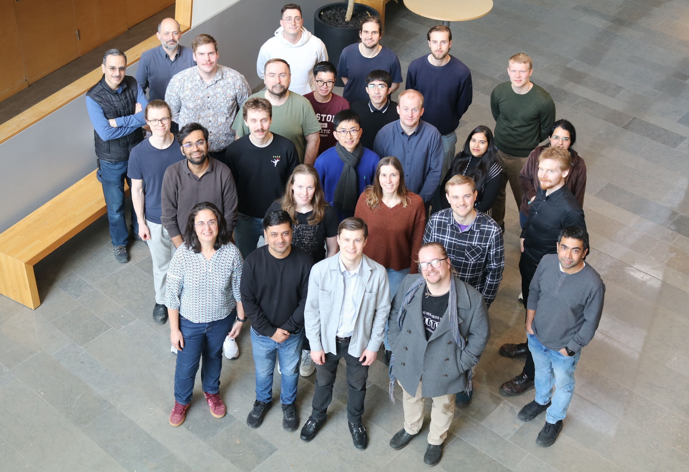
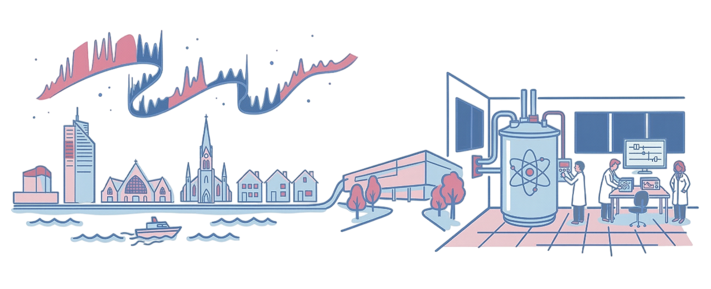
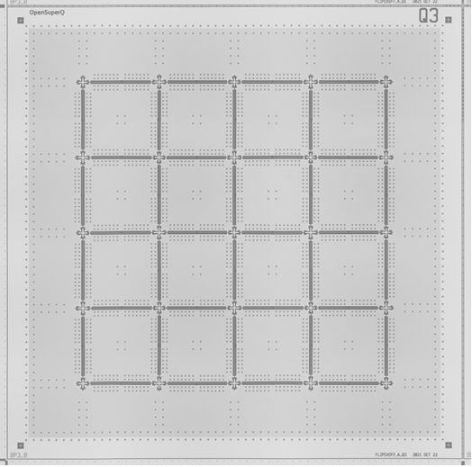
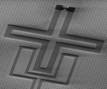
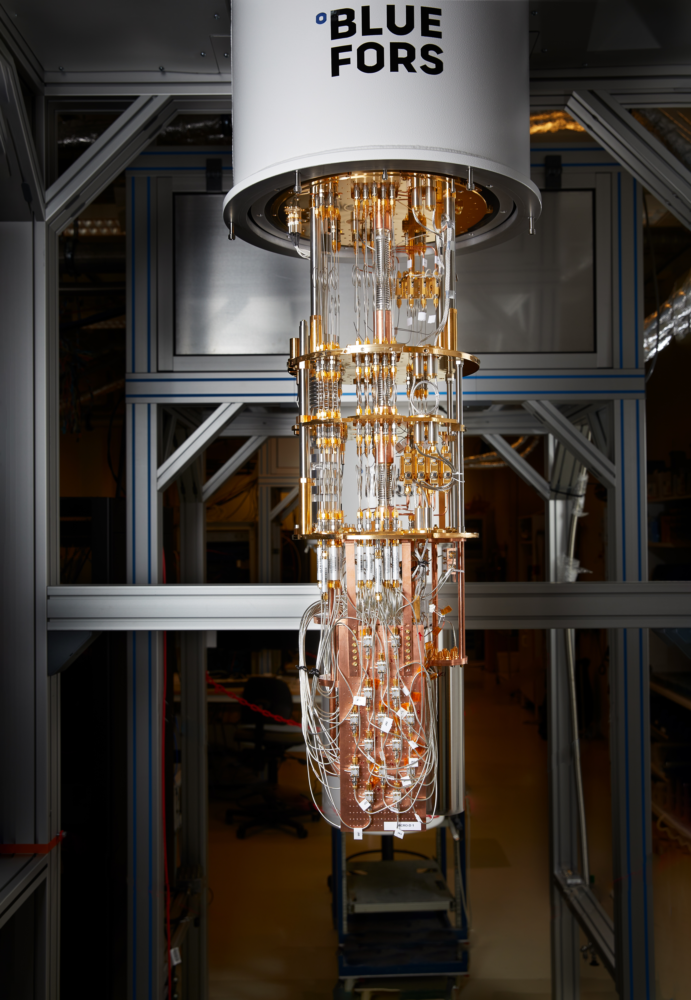

Welcome webpage of the QC2 Lab!

Our mission
We are a team of physicists and engineers specialized in superconducting circuits for quantum computing applications and enabling technologies. Our work focuses on developing fast, high-fidelity quantum gates and qubit readout, improving qubit coherence through device design and fabrication, while advancing the development of large-scale quantum processors.

We are based at the Microtechnology and Nanoscience Department (MC2) at Chalmers University of Technology, where we have access to state-of-the-art laboratories and clean room.
Latest publications
-
Oct 2026
Optimal robust single-qubit gates in superconducting quantum processors
Fault-tolerant quantum computing requires high-fidelity quantum gates that are resilient to control errors and device imperfections. Here, we develop energy-optimal control pulses for single-qubit gates that are simultaneously robust against frequency detuning and waveform inhomogeneities while also suppressing leakage outside the computational subspace. Combining the optimized pulse envelopes with an adaptive control scheme, we experimentally demonstrate optimal robust gates on a superconducting quantum processor. For a gate duration of 90ns, we achieve fidelities above 99.9% for the X gate and 99.6% for Hadamard-type gates. For the X gate, we maintain fidelities above 99.5% for simultaneous drive-amplitude variations up to 20% and qubit detuning up to 4 MHz. This robustness outperforms that of conventional Gaussian pulses by an order of magnitude, without much difference in peak gate fidelity. These results establish a route towards robust single-qubit control in large-scale quantum processors, advancing the development of fault-tolerant quantum computing. -
Jul 2026
MPStab: an hybrid stabilizers tensor-network quantum circuit simulator
The development of techniques for simulating quantum systems using classical computers is a paramount task for two primary reasons: i) there exist configurations for which classical computers are remarkably effective and will continue to be so, and ii) exploring the limits of classical computation facilitates the identification of the regimes of competence for quantum computers. In this work, we present MPStab, a quantum circuit simulator based on a hybrid formalism combining stabilizers and tensor networks, recently introduced in Ref. [1]. We present the package, its core functionalities, and explore its performances in a few interesting simulation regimes. -
Feb 2026
Electrical post-fabrication tuning of aluminum Josephson junctions at room temperature
Josephson junctions are a key element of superconducting quantum technology, serving as the core building blocks of superconducting qubits. We present an experimental study on room-temperature electrical tuning of aluminum junctions, showing that voltage pulses can controllably increase their resistance and adjust the Josephson energy while maintaining qubit quality factors above 1 million. We find that the rate of resistance increase scales exponentially with pulse amplitude during manipulation, after which the spontaneous resistance increase scales proportionally to the amount of manipulation. We show that this spontaneous increase halts at cryogenic temperatures, and resumes again at room temperature. Using our stepwise protocol, we achieve up to a 270% increase in junction resistance, corresponding to a reduction of nearly 2 GHz of the qubit transition frequency. These results establish the achievable range, relaxation behavior, and practical limits of electrical tuning, enabling post-fabrication mitigation of frequency crowding in quantum processors. -
June 2025
Real-time adaptive tracking of fluctuating relaxation rates in superconducting qubits
The fidelity of operations on a solid-state quantum processor is fundamentally bounded by environmental decoherence. Characterizing environmental fluctuations is challenging because the acquisition time of nonadaptive experimental protocols limits temporal precision and can average out rapid features of the underlying dynamics. Here, we overcome this temporal-resolution limit by two orders of magnitude using a field-programmable gate-array (FPGA) powered classical controller that adaptively and continuously tracks the relaxation-time fluctuations of two fixed-frequency superconducting transmon qubits, which exhibit average relaxation times of approximately 0.17 ms and occasionally exceed 0.5 ms. We report events in which the relaxation time switches by nearly an order of magnitude over timescales of just tens of milliseconds, rather than minutes or hours as previously reported. Our real-time Bayesian estimation protocol estimates relaxation times within a few milliseconds, close to the decoherence timescale itself. Our statistical analysis further suggests that some of these fast fluctuations arise from two-level systems switching at rates up to 10 Hz, four orders of magnitude faster than earlier reports. These results redefine the timescales relevant for calibration in superconducting quantum processing units, establish a reference for rapid relaxation-rate characterization in device screening, and improve our understanding of fast relaxation dynamics.
To have an overview of all the publications of the QC2 lab since its foundations, click below.
View all publicationsOpportunities
-
Contact us
Contact us if you are interested in working in our group.
We are always open to hearing from motivated candidates. We also have master student projects available throughout the year, so feel free to get in touch about those as well.
Some pictures from our lab




